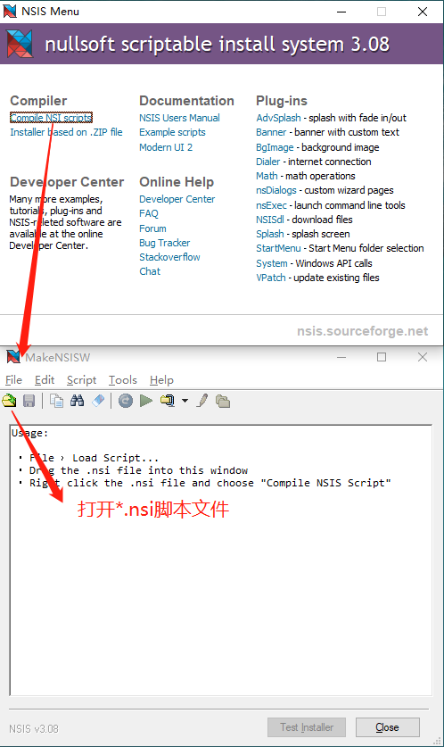
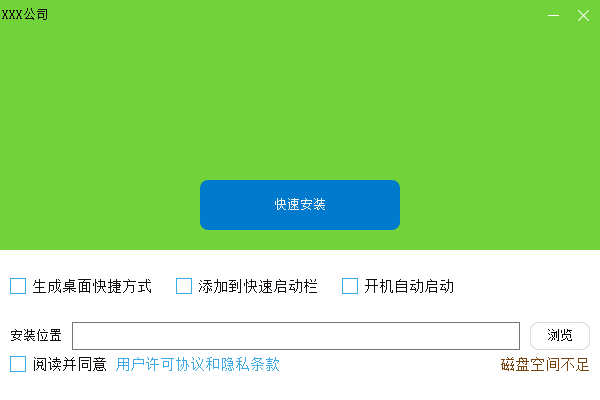

- 制作者
 1.9.6
1.9.6
|
CBlueUI
vxxx
C++ 跨平台跨框架的数据可视化工具
|
NSIS https://nsis.sourceforge.io/Download
NSIS（Nullsoft Scriptable Install System）是用于创建 Windows 安装程序的专业开源系统。 它被设计为尽可能小而灵活，因此非常适合互联网分发。
作为用户对您产品的第一次体验，稳定可靠的安装程序是成功软件的重要组成部分。 使用 NSIS，您可以创建能够执行设置软件所需的一切的安装程序。
NSIS 是基于脚本的，允许您创建逻辑来处理最复杂的安装任务。 许多插件和脚本已经可用：您可以创建 Web 安装程序、与 Windows 和其他软件组件通信、安装或更新共享组件等等。

